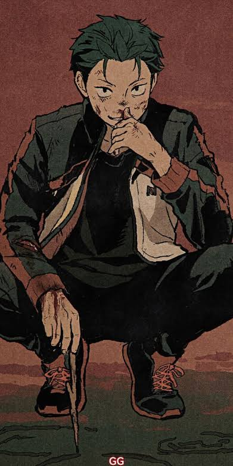
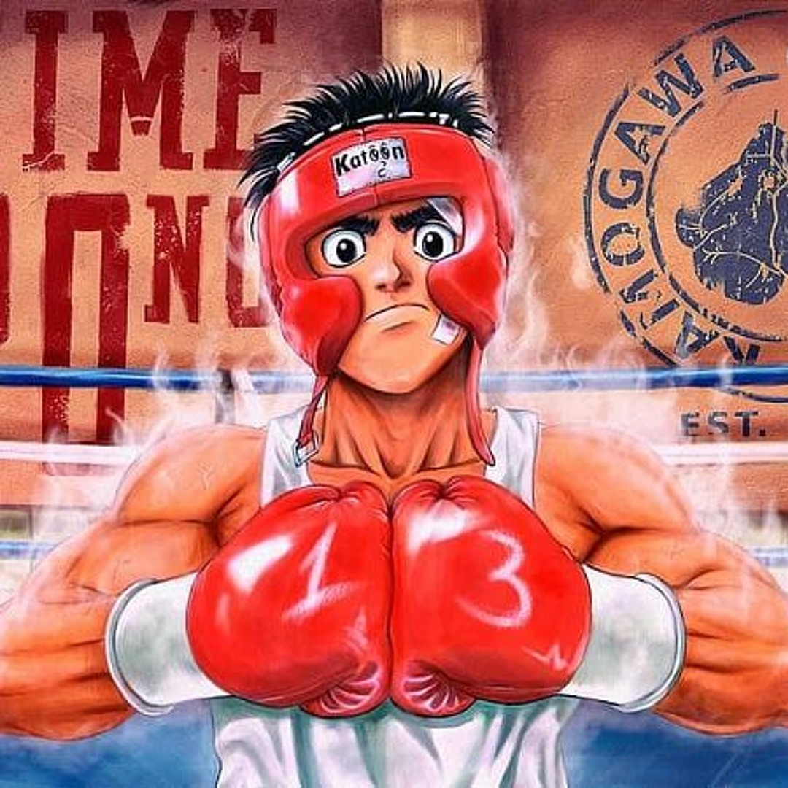

What is a Hero?
According to the Merriam-Webster dictionary, a hero is someone who is admired for their courage, noble qualities, and selfless acts. They can be a person or a fictional character. For the sake of example, I will be showing some of my favorite fictional heroes.
These are some pictures of those fictional heroes.

